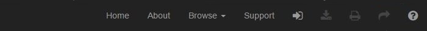
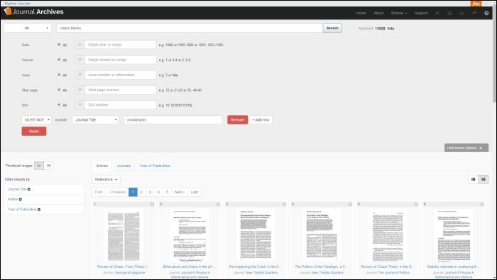

There is a black horizontal navigation bar at the top of the screen on every page of Journal Archives so you can quickly navigate to any part of the website from any page you are on. Some options are only be available on certain pages though, for example the download and share buttons are only enabled when you have opened an article.
We are using Elasticsearch open source software to index the data in Journal Archives.
To run a standard search enter your search terms in the search box and select the "search" button. By default, this will search all of the information in the bibliographic records as well as the full text. The number of matching results will be shown to the right of the search box.
If you do want to limit your search to a particular field e.g. article title or author you can do so using the drop down list to the left of the search box.
The options available are:
Simply select "more search options" on the search page to show additional search features.
From here you can specify date range, volume, issue, start page and DOI. You can also add new rows and specify whether your terms MUST, SHOULD or MUST NOT appear in your results.
The first clause of the search (in the main search box) is a MUST - so the results must include whatever goes in that first box. This means that whatever else goes in the search you are essentially starting from a situation where the search in the first box is compulsory. This means that adding a SHOULD clause to this cannot increase the set of results. Adding a SHOULD clause cannot reduce the set of results either (as the clause is optional).
This means that adding a SHOULD clause does not change the total number of results. What it does do is re-order the results when using the relevance ranking, so those items matching the SHOULD clauses come to the top.
The familiar boolean operators AND, OR, NOT (alternatively you can write them as &&, ||, !) are supported and can be entered directly into the search box. NOT takes precedence over AND, which takes precendence over OR and you can combine these operators with brackets. These operators can affect the terms to the left and right of them.
You can also use the prefered Elasticsearch operators '+' (which means the term MUST be present) and '-' (which means the term MUST NOT be present). These operators can only affect the terms to the right of them.
The example below finds all results for "shakespeare" without "venice" in.
shakespeare -venice
By default, any terms you enter in the search box MUST be present. For instance, all of the searches below are identical:
shakespeare -venice ode
+shakespeare -venice ode
+shakespeare -venice +ode
Two wildcard operators are available:
* = Match any character, including no character
? = Match any single character; will not match no character
Please avoid wildcard characters occurring at or before the third position as they may produce too many unrelated matches.
Certain characters function as operators in the system and if you want to use them in your search query, but not as an operator, then you will need to escape them with a leading backslash.
The reserved characters are:
+ - && || ! ( ) { } [ ] ^ " ~ * ? : \ /
To view an article simply select a record from your results list or the browse pages by clicking on the thumbnail or title hyperlink for it. This will open up the viewer, enabling you to view the article, full text and thumbnails side by side. Using the navigation bar at the top of the screen, you can download the article as a PDF as well as download the bibliographic citation information (RIS) and get a permanent URL for the publication when viewing an image.
The viewer is comprised of three panels: a central panel displaying the images and a search panel to the left and a details panel to the right which are collapsed by default. To open the left hand panel select the "Search" button on the left hand side of the viewer and to open the right hand panel select the "Details" button on the right of the viewer.
You can have all three panels open at the same time, or just one or two of them and you can re-size the panels by dragging the handle in the middle of the panel edge to the left or right. To close either panel click on the cross at the top of the panel edges.
The options available on each of the three panels are listed below.
The central panel in the viewer displays the page images. There is a toolbar on the left hand side of the panel providing the following options:
To open the search panel, select the "Search" button on the left had side of the viewer. You can re-size the panel by dragging the handle in the middle of the panel edge across to the right and you can close the panel using the cross at the top of the panel edge. There are three tabs providing options for navigating publications:
To open the details panel click on the "details" button on the right hand side of the viewer. You can re-size the panel by dragging the handle in the middle of the panel edge across to the left and you can close the panel using the cross at the top of the panel edge. There are two tabs providing additional information on the publication:
Full text is available for all articles.
You can download an article using the "download" link underneath each search result or by using the download icon on the toolbar in the viewer while viewing an article. You can also download the bibiliographic information in RIS format using the download icon on the toolbar.
Please note: the download button is only enabled on the navigation bar when you have opened an article in the viewer. On all other pages it is currently disabled and greyed out.
The "Share" button on the navigation bar at the top of the screen provides a stable (permanent) URL for the article you are viewing for you to copy and paste into your documents or web pages. The button is deactivated and greyed out until you open an article in the viewer, at which point it is enabled and when you select it a dialogue box containing a stable URL for the publication will be displayed.
When you select the button the dialogue box below will open, displaying a stable URL for the publication for you to copy and paste into a web page or document.